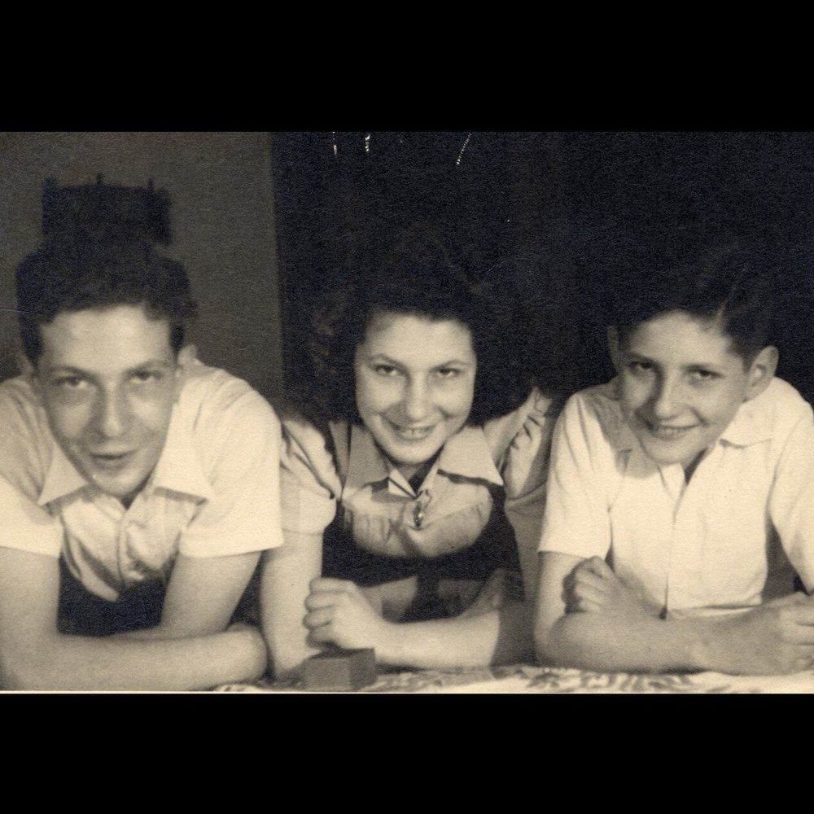

Portrait d’archive
Enfants Goldschmidt
Jacques Francis GOLDSCHMIDT
Jacques Goldschmidt est née le 08/12/1928 à Lyon en France.
Rassemblé à Lyon, il est déporté à Auschwitz le 20/11/1943 par le convoi n°62. Il est mort en déportation.
Dernière adresse connue : 99, rue de l’Hôtel de Ville (Lyon)
École fréquentée : Lycée Ampère (Lyon)
Nom : GOLDSCHMIDT
Prénom(s) : Jacques Simon Francis
Date naissance : 08/12/1928
Âge (ans) : 15
Lieu naissance : Lyon
Pays ou département : Rhône
Lieu rassemblement : Lyon
Dernière adresse : 99, rue de l’Hôtel de Ville (aujourd'hui 99 rue Édouard Herriot)
Ville : Lyon
Code postal : 69001
N° Convoi : 62
Date déportation : 20/11/1943
Fils d’Émilie (Mimi) née Cahen, sa mère (20/05/1902, Mulhouse) et de Maurice, son père (Dornach, Mulhouse, 06/1884) associé depuis 1920 avec ses frères Marcel, Louis et Sylvain dans une société de fabrication et de négoce de soieries à Lyon.
Sigmar et Alice Günzburger, oncle et tante de Émilie Goldschmidt (Marie Cahen, la mère d'Emilie, était la soeur de Sigmar) ont fuit la ville allemande de Freiburg i.Breisgau en 1938 vers Mulhouse, Gray, puis Lyon en 1941. Ils ont ainsi eu l'occasion de passer du temps avec Marie Cahen, Émilie et Maurice Goldschmidt et leurs enfants. Ils ont proposé à Émilie et Maurice de s'échapper avec eux en direction des États-Unis. Sigmar s'était occupé de réserver des places pour eux sur le même bateau. Emilie a refusé en se croyant protégée par leur citoyenneté française et leur statut social. Sigmar et Alice avec leurs trois enfants ont réussi à embarquer le 13 mars 1942 sur le "Lipari", le dernier bateau parti de Marseille avant que les allemands n'occupent le port . Le "Lipari" a emmené Sigmar, Alice et leurs enfants à Casablanca, où ils ont embarqué sur un autre bateau, "le San Thomé", en direction de Cuba. Le "San Thomé" a été le dernier bateau de réfugiés à être admis à Cuba pendant la guerre. Ils ont été obligés d'y rester plus d'une année, d'abord dans un camp, puis à La Havane, en essayant d'obtenir un visa d'entrée aux Etats-Unis, où ils sont finalement arrivés en 1944 (Source: L. Maitland "Un amour plus fort que le temps", 2016).
Jacques est élève au Lycée Ampère de 1937 à 1943-44. Le 29 octobre 1943, Émilie et ses enfants sont arrêtés et incarcérés à la prison Montluc. Le 09/11/1943, ils arrivent à Drancy et sont déportés le 20 novembre 1943 par le convoi N° 62 pour Auschwitz (Source: JewishTrace). Isabelle (Bella) Picard, 64 ans (née le 06/06/1879 à Habsheim, Haut-Rhin) la nounou de la famille, qui habitait à la même adresse, a été arrêtée lorsqu'elle a volontairement apporté des vêtements aux enfants à la prison Montluc. Elle sera déportée à Drancy et à Auschwitz par le même convoi n°62 que la famille Goldschmidt (Source: François Blum). Au moment de leur arrestation le 29 octobre 1943, leur père Maurice et leur grand-mère Marie sont tous deux hospitalisés, ce qui leur permettra d'échapper à la rafle fatale aux enfants, à leur mère Emilie et à leur nounou Isabelle.
Il est apparu que la famille avait été dénoncée, probablement par des voisins de l'immeuble (Source : Leslie Maitland).
Sa belle-mère Marie est venue habiter chez lui après que son épouse et ses enfants ont été déportés. Elle n'a pas cessé d'écrire à son frère Sigmar en 1945 en lui disant que Mimi, Bella et les enfants avaient été déportés vers l'est en 1943. Elle implorait Sigmar à l'aide pour lui permettre de trouver ce qu'il leur était arrivé, en espérant qu'ils étaient toujours en vie (source : Leslie Maitland)
A la fin de la guerre, leur père Maurice arpentera jusqu'à sa mort pendant plusieurs années les quais de la gare de Perrache, dans l'espoir de voir revenir sa famille (Source: F. Blum). Il ne recevra les avis d’internement à la prison Montluc que le 11/08/1948.
Une tombe mémorial au cimetière de la Mouche à Lyon porte le nom de Mimi et de ses trois enfants ainsi que celui de leur nounou Isabelle. Huguette Lévy épouse Hordentlir; déportée à Auschwitz (convoi 70 du 27/03/1944) et survivante remplira une fiche de témoignage en hébreu à l’Institut Yad Vashem de Jérusalem (en octobre 2015) sur chaque membre de la famille Goldschmidt. Elle était la cousine de Mimi Goldschmidt. Sa sœur, Claude Lévy, morte en déportation, était scolarisée au Lycée de jeunes filles Edgar Quinet (Edouard Herriot) comme Janine, sa petite cousine.
Le livre "Un amour plus fort que le temps" écrit par Leslie Maitland (Pocket, 2016) raconte partiellement l’histoire de la famille Goldschmidt et relate l'histoire complète de la fuite d'Allemagne de Sigmar et Alice Günzburger accompagnés de leurs enfants Janine (Hanna), Norbert et Trudi (Gertrude) à travers la France vers Cuba et les USA, sur fond de l'histoire d'amour de jeunesse de Janine avec un jeune alsacien catholique de Mulhouse, perdu de vue lors de l'embarquement à Marseille le 13 mars 1942 et retrouvé par Leslie (journaliste d'investigation au NY Times) dans les années 1990 à Montréal au Canada.
Goldschmidt (Jacques, Simon), né le 8 décembre 1928 à Lyon (2e) (Rhône), décédé le 23 novembre 1943 à Birkenau (Pologne) (JO n° 2 du 4/1/1994).
Goldschmidt (Elie, Jean), né le 8 novembre 1925 à LYON (2e) (Rhône), décédé le 31 janvier 1944 à Birkenau (Pologne). Goldschmidt (Janine), née le 23 juin 1927 à Lyon (2e) (Rhône), décédée le 23 novembre 1943 à Birkenau (Pologne) (JO n° 2 du 4/1/1994). Goldschmidt, née Cahen (Emilie, Erna) le 28 mai 1902 à Mulhouse (Haut-Rhin), décédée le 23 novembre 1943 à Birkenau (Pologne).
Picard (Isabelle), née le 5 juin 1879 à Habsheim (Haut-Rhin), décédée le 25 novembre 1943 à Auschwitz (Pologne) et non le 20 novembre 1943 (sans autre renseignement).
Lieu de déportation : Auschwitz
Lieu de départ : Drancy
Nombre total de déporté·e·s du convoi : 1200
Gazé·e·s à l'arrivée : 914 (76,2 %)
Survivant·e·s en 1945 : 29 (2,4 %)
Janine GOLDSCHMIDT
Janine Goldschmidt est née le 23/06/1927 à Lyon en France.
Rassemblé à Lyon, elle est déportée à Auschwitz le 20/11/1943 par le convoi n°62. Elle est mort en déportation.
Dernière adresse connue : 99, rue de l’Hôtel de Ville (Lyon)
École fréquentée : Lycée de jeunes filles Edgar Quinet (aujourd'hui Edouard Herriot), Lyon
Nom : GOLDSCHMIDT
Prénom(s) : Janine, Jeanine, Jeanne
Date naissance : 23/06/1927
Âge (ans) : 16
Lieu naissance : Lyon
Pays ou département : Rhône
Lieu rassemblement : Lyon
Dernière adresse : 99, rue de l’Hôtel de Ville (aujourd'hui 99 rue Édouard Herriot)
Ville : Lyon
Code postal : 69001
N° Convoi : 62
Date déportation : 20/11/1943
Fille d’Emilie (Mimi) née Cahen, sa mère (20/05/1902, Mulhouse) et de Maurice, son père (Dornach, Mulhouse, 06/1884) associé depuis 1920 avec ses frères Marcel, Louis et Sylvain dans une société de fabrication et de négoce de soieries à Lyon.
Janine est élève au Lycée Edgar Quinet (Edouard Herriot) de Lyon, 6ème ; En classe de 3°3A" en 41/42 avec : BLUM Françoise, COHEN Solange, HERZOG Janine, LANG Monique, LEVY Lise, MAJMANOWITCH Myriam, RUTKOWSKI Léa, SINAI Rachel et WEBER Nicole ; En classe de 2ème B avec Lise BACRI, (2ème D)
Le 29 octobre 1943, Émilie et ses enfants sont arrêtés et incarcérés à la prison Montluc. Le 09/11/1943, ils arrivent à Drancy et sont déportés le 20 novembre 1943 par le convoi N° 62 pour Auschwitz (Source: JewishTrace). Isabelle (Bella) Picard, 64 ans (née le 06/06/1879 à Habsheim, Haut-Rhin) la nounou de la famille, qui habitait à la même adresse, a été arrêtée lorsqu'elle a volontairement apporté des vêtements aux enfants à la prison Montluc. Elle sera déportée à Drancy et à Auschwitz par le même convoi n°62 que la famille Goldschmidt (Source: François Blum). Au moment de leur arrestation le 29 octobre 1943, leur père Maurice et leur grand-mère Marie sont tous deux hospitalisés, ce qui leur permettra d'échapper à la rafle fatale aux enfants, à leur mère Emilie et à leur nounou Isabelle.Il est apparu que la famille avait été dénoncée, probablement par des voisins de l'immeuble (Source : Leslie Maitland).
Sa belle-mère Marie est venue habiter chez lui après que son épouse et ses enfants ont été déportés. Elle n'a pas cessé d'écrire à son frère Sigmar en 1945 en lui disant que Mimi, Bella et les enfants avaient été déportés vers l'est en 1943. Elle implorait Sigmar à l'aide pour lui permettre de trouver ce qu'il leur était arrivé, en espérant qu'ils étaient toujours en vie (source : Leslie Maitland)
A la fin de la guerre, leur père Maurice arpentera jusqu'à sa mort pendant plusieurs années les quais de la gare de Perrache, dans l'espoir de voir revenir sa famille (Source: F. Blum). Il ne recevra les avis d’internement à la prison Montluc que le 11/08/1948.
Une tombe mémorial au cimetière de la Mouche à Lyon porte le nom de Mimi et de ses trois enfants ainsi que celui de leur nounou Isabelle. Huguette Lévy épouse Hordentlir; déportée à Auschwitz (convoi 70 du 27/03/1944) et survivante remplira une fiche de témoignage en hébreu à l’Institut Yad Vashem de Jérusalem (en octobre 2015) sur chaque membre de la famille Goldschmidt. Elle était la cousine de Mimi Goldschmidt. Sa sœur, Claude Lévy, morte en déportation, était scolarisée au Lycée de jeunes filles Edgar Quinet (Edouard Herriot) comme Janine, sa petite cousine.
Le livre "Un amour plus fort que le temps" écrit par Leslie Maitland (Pocket, 2016) raconte partiellement l’histoire de la famille Goldschmidt et relate l'histoire complète de la fuite d'Allemagne de Sigmar et Alice Günzburger accompagnés de leurs enfants Janine (Hanna), Norbert et Trudi (Gertrude) à travers la France vers Cuba et les USA, sur fond de l'histoire d'amour de jeunesse de Janine avec un jeune alsacien catholique de Mulhouse, perdu de vue lors de l'embarquement à Marseille le 13 mars 1942 et retrouvé par Leslie (journaliste d'investigation au NY Times) dans les années 1990 à Montréal au Canada.
Goldschmidt (Janine), née le 23 juin 1927 à Lyon (2e) (Rhône), décédée le 23 novembre 1943 à Birkenau (Pologne) (JO n° 2 du 4/1/1994)
Goldschmidt (Elie, Jean), né le 8 novembre 1925 à LYON (2e) (Rhône), décédé le 31 janvier 1944 à Birkenau (Pologne). Goldschmidt (Jacques, Simon), né le 8 décembre 1928 à Lyon (2e) (Rhône), décédé le 23 novembre 1943 à Birkenau (Pologne) (JO n° 2 du 4/1/1994). Goldschmidt, née Cahen (Emilie, Erna) le 28 mai 1902 à Mulhouse (Haut-Rhin), décédée le 23 novembre 1943 à Birkenau (Pologne).
Picard (Isabelle), née le 5 juin 1879 à Habsheim (Haut-Rhin), décédée le 25 novembre 1943 à Auschwitz (Pologne) et non le 20 novembre 1943 (sans autre renseignement).
Lieu de déportation : Auschwitz
Lieu de départ : Drancy
Nombre total de déporté·e·s du convoi : 1200
Gazé·e·s à l'arrivée : 914 (76,2 %)
Survivant·e·s en 1945 : 29 (2,4 %)
Elie Jean GOLDSCHMIDT
Elie Jean Goldschmidt est née le 08/11/1925 à Lyon en France.
Rassemblé à Lyon, il est déporté à Auschwitz le 20/11/1943 par le convoi n°62. Il est mort en déportation.
Dernière adresse connue : 99, rue de l’Hôtel de Ville (Lyon)
École fréquentée : Lycée Ampère (Lyon)
Nom : GOLDSCHMIDT
Prénom(s) : Elie Jean
Date naissance : 08/11/1925
Âge (ans) : 18
Lieu naissance : Lyon
Pays ou département : Rhône
Lieu rassemblement : Lyon
Dernière adresse : 99, rue de l’Hôtel de Ville (aujourd'hui 99 rue Édouard Herriot)
Ville : Lyon
Code postal : 69001
N° Convoi : 62
Date déportation : 20/11/1943
Fils d’Emilie (Mimi) née Cahen, sa mère (20/05/1902, Mulhouse) et de Maurice, son père (Dornach, Mulhouse, 06/1884) associé depuis 1920 avec ses frères Marcel, Louis et Sylvain dans une société de fabrication et de négoce de soieries à Lyon.
Elie-Jean est élève à l’Ecole Lamartine (2, rue Fabre, 69002; entrée à l’école le 2/10/1931) puis au Lycée Ampère de 1937 à 1943. Il était très doué pour la musique et les mathématiques.
Le 29 octobre 1943, Émilie et ses enfants sont arrêtés et incarcérés à la prison Montluc. Le 09/11/1943, ils arrivent à Drancy et sont déportés le 20 novembre 1943 par le convoi N° 62 pour Auschwitz (Source: JewishTrace). Isabelle (Bella) Picard, 64 ans (née le 06/06/1879 à Habsheim, Haut-Rhin) la nounou de la famille, qui habitait à la même adresse, a été arrêtée lorsqu'elle a volontairement apporté des vêtements aux enfants à la prison Montluc. Elle sera déportée à Drancy et à Auschwitz par le même convoi n°62 que la famille Goldschmidt (Source: François Blum). Au moment de leur arrestation le 29 octobre 1943, leur père Maurice et leur grand-mère Marie sont tous deux hospitalisés, ce qui leur permettra d'échapper à la rafle fatale aux enfants, à leur mère Emilie et à leur nounou Isabelle.Il est apparu que la famille avait été dénoncée, probablement par des voisins de l'immeuble (Source : Leslie Maitland).
Sa belle-mère Marie est venue habiter chez lui après que son épouse et ses enfants ont été déportés. Elle n'a pas cessé d'écrire à son frère Sigmar en 1945 en lui disant que Mimi, Bella et les enfants avaient été déportés vers l'est en 1943. Elle implorait Sigmar à l'aide pour lui permettre de trouver ce qu'il leur était arrivé, en espérant qu'ils étaient toujours en vie (source : Leslie Maitland)
A la fin de la guerre, leur père Maurice arpentera jusqu'à sa mort pendant plusieurs années les quais de la gare de Perrache, dans l'espoir de voir revenir sa famille (Source: F. Blum). Il ne recevra les avis d’internement à la prison Montluc que le 11/08/1948.
Une tombe mémorial au cimetière de la Mouche à Lyon porte le nom de Mimi et de ses trois enfants ainsi que celui de leur nounou Isabelle. Huguette Lévy épouse Hordentlir; déportée à Auschwitz (convoi 70 du 27/03/1944) et survivante remplira une fiche de témoignage en hébreu à l’Institut Yad Vashem de Jérusalem (en octobre 2015) sur chaque membre de la famille Goldschmidt. Elle était la cousine de Mimi Goldschmidt. Sa sœur, Claude Lévy, morte en déportation, était scolarisée au Lycée de jeunes filles Edgar Quinet (Edouard Herriot) comme Janine, sa petite cousine.
Le livre "Un amour plus fort que le temps" écrit par Leslie Maitland (Pocket, 2016) raconte partiellement l’histoire de la famille Goldschmidt et relate l'histoire complète de la fuite d'Allemagne de Sigmar et Alice Günzburger accompagnés de leurs enfants Janine (Hanna), Norbert et Trudi (Gertrude) à travers la France vers Cuba et les USA, sur fond de l'histoire d'amour de jeunesse de Janine avec un jeune alsacien catholique de Mulhouse, perdu de vue lors de l'embarquement à Marseille le 13 mars 1942 et retrouvé par Leslie (journaliste d'investigation au NY Times) dans les années 1990 à Montréal au Canada.
Goldschmidt (Elie, Jean), né le 8 novembre 1925 à LYON (2e) (Rhône), décédé le 31 janvier 1944 à Birkenau (Pologne) JO n°2 du 4/1/94
Goldschmidt (Jacques, Simon), né le 8 décembre 1928 à Lyon (2e) (Rhône), décédé le 23 novembre 1943 à Birkenau (Pologne) (JO n° 2 du 4/1/1994). Goldschmidt (Janine), née le 23 juin 1927 à Lyon (2e) (Rhône), décédée le 23 novembre 1943 à Birkenau (Pologne) (JO n° 2 du 4/1/1994); Goldschmidt, née Cahen (Emilie, Erna) le 28 mai 1902 à Mulhouse (Haut-Rhin), décédée le 23 novembre 1943 à Birkenau (Pologne).
Picard (Isabelle), née le 5 juin 1879 à Habsheim (Haut-Rhin), décédée le 25 novembre 1943 à Auschwitz (Pologne) et non le 20 novembre 1943 (sans autre renseignement).
Lieu de déportation : Auschwitz
Lieu de départ : Drancy
Nombre total de déporté·e·s du convoi : 1200
Gazé·e·s à l'arrivée : 914 (76,2 %)
Survivant·e·s en 1945 : 29 (2,4 %)